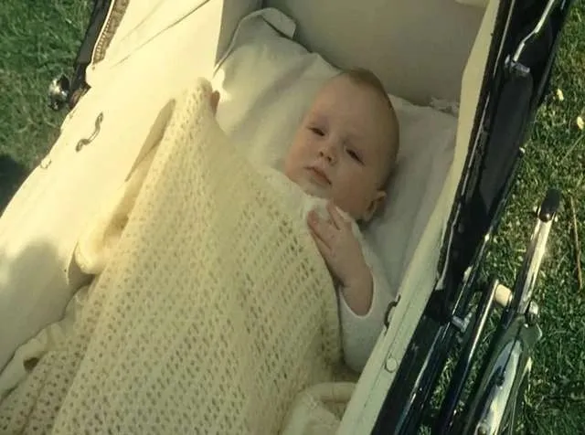

The Church of England will say sorry in public for its part in forced adoptions in the past. This will have a huge effect on both religious and social life in the UK.This significant option puts an end to decades of institutionalized mistreatment that caused thousands of single mothers to give up their children.The Church wants to deal with a difficult portion of its past by acknowledging to these things it did. It also aims to provide families whose lives were impacted forever by these policies a sense of justice that has been a long time coming.

The History of Mother and Baby Homes from 1945 to 1976
There was a lot of social guilt regarding terminal pregnancies from 1945 to 1976, which often made women who were already in a bad situation do things they didn't want to do.At this period, the Church of England ran a lot of homes for mothers and newborns all over the country.These institutions were supposed to be safe havens, but they often became places where single mothers were ashamed and had to give up their newborns.This happened a lot, and estimates say that tens of thousands of babies were taken away from their biological mothers throughout this thirty-one-year period. The women were often not given any good options or help to keep their children.
A Major Shift in the Church's Culture
The Church of England's culture is changing a lot with this public apology. It wants to be more open and understanding about its past.In recent years, it has become more important for institutions to be held responsible for things they did wrong in the past.The decision to speak out now illustrates how things are changing in the UK. The rights of birth parents and the mental ramifications of being separated are now getting the attention they deserve.It means going from staying quiet to doing something to make things right, knowing that the moral standards of the time don't make the harm done to people and families any less bad.
Repairing the Harm Caused by Past Forced Adoptions
For many of the people affected, the Church's admission of its previous role in forced adoptions is a big step toward healing.Mothers who have been grieving the loss for decades and children who grew up not knowing their biological history have been battling for this kind of recognition for a long time.A formal statement can't reverse what happened in 1945 and 1976, but it does firmly back up what people went through.This act of contrition is supposed to make it easier to collect records of adoptions and better support services. It will also make sure that the lessons learned from this time will continue to build social policies that are more caring in the future.
Looking forward to a future where I have more duties
The Church of England is getting ready to say apologize, but the main thing is still the survivors and making sure that tragedies like this never happen again.This moment isn't only about looking back; it's also about figuring out what the Church's values are in the world now.By taking responsibility for its previous role in forced adoptions, the institution shows that it cares about integrity and human rights.This shift shows that activists can keep trying and that telling the truth can help make the UK a better and more inviting environment for everyone.